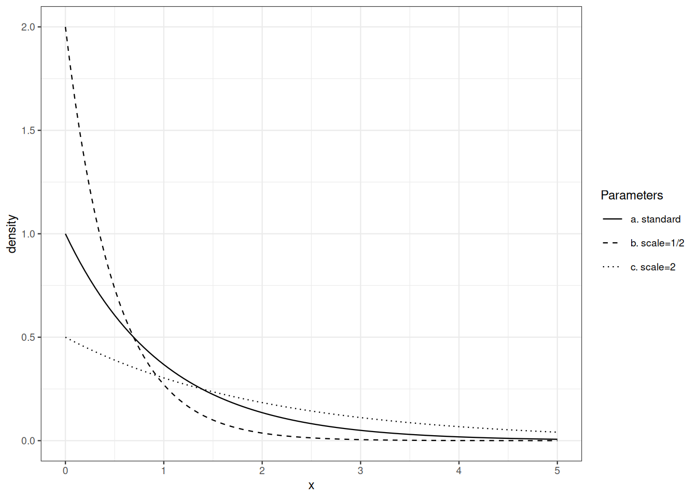

variance equals squared scale.
Beyond discrete distributions, the simplest probability distributions are defined by a density function with respect to a (\(\sigma\)-finite) measure. This encompasses the distributions of the so-called continuous random variables.
Definition 6.1 (Absolute continuity) Let \(\mu, \nu\) be two positive measures on measurable space \((\Omega, \mathcal{F})\), \(\mu\) is said to be absolutely continuous with respect to \(\nu\) (denoted by \(\mu \trianglelefteq \nu\)) iff for every \(A \in \mathcal{F}\) with \(\nu(A)=0\), we also have \(\mu(A)=0\).
If \(\mu, \nu\) are two probability distributions, and \(\mu \trianglelefteq \nu\), then any event which is impossible under \(\nu\) is also impossible under \(\mu\).
Exercise 6.1 Answer the two questions:
Exercise 6.2 Check that absolute continuity is a transitive relationship.
The next theorem has far-reaching practical consequences.
Theorem 6.1 (Radon-Nikodym) Let \(\mu, \nu\) be two positive measures on measurable space \((\Omega, \mathcal{F})\). Assume \(\nu\) is \(\sigma\)-finite. If \(\mu \trianglelefteq \nu\), then there exists a measurable function \(f\) from \(\Omega\) to \([0, \infty)\) such that for all \(A \in \mathcal{F}\), \[ \mu(A) = \int_A f(\omega) \mathrm{d}\nu(\omega) = \int \mathbb{I}_A f \mathrm{d}\nu \, . \] The function \(f\) is called a version of the density of \(\mu\) with respect to \(\nu\).
The density is also called the Radon-Nikodym derivative of \(\mu\) with respect to \(\nu\). It is sometimes denoted by \(\frac{\mathrm{d}\mu}{\mathrm{d}\nu}\).
Remark 6.1. The \(\sigma\)-finiteness assumption is crucial. If we choose \(\mu\) as Lebesgue measure and \(\nu\) as the counting measure, \(\nu\) is not \(\sigma\)-finite, \(\mu(A)>0\) implies \(\nu(A)=\infty\) which we may consider as larger than \(0\). Nevertheless, Lebesgue measure has no density with respect to the counting measure.
In the next sections, we investigate probability distributions over \((\mathbb{R}, \mathcal{B}(\mathbb{R}))\) that are absolutely continuous with respect to Lebesgue measure.
Proposition 6.1 If \(\rho \trianglelefteq \mu \trianglelefteq \nu\), \(f\) is a density of \(\rho\) with repsect to \(\mu\) while \(g\) is a density of \(\mu\) with respect to \(\nu\), then \(fg\) is a density of \(\rho\) with respect to \(\nu\).
Exercise 6.3 Prove proposition 6.1.
The exponential distribution shows up in several areas of probability and statistics. In reliability theory, its memoryless property make it a borderline case. In the theory of point processes, the exponential distribution is connected with Poisson Point Processes. It is also important in extreme value theory.
The exponential distribution with intensity parameter \(\lambda>0\) is defined by its desnsity with respect to Lebesgue measure on \([0,\infty)\): \[ x \mapsto \lambda \mathrm{e}^{-\lambda x} \, . \] The reciprocal of the intensity parameter is called the scale parameter.
Note that geometric and exponential distributions are connected: if \(X\) is exponentially distributed, then \(\lceil X\rceil\) is geometrically distributed. For \(k\geq 1\): \[ P \Big\{ \lceil X \rceil \geq k \Big\} = P \Big\{ X > k - 1 \Big\} = \mathrm{e}^{- \lambda (k-1)} \, . \]
Exercise 6.4 Check that \(x \mapsto \lambda \mathrm{e}^{-\lambda x}\) is a density probability over \([0, \infty)\).
Exercise 6.5 Compute the tail function and the cumulative distribution function of the exponential distribution function with parameter \(\lambda\).
Exercise 6.6 Let \(X_1, \ldots, X_n\) be i.i.d. exponentially distributed. Characterize the distribution of \(\min(X_1, \ldots, X_n)\).
If \(X\) is exponentially distributed with scale parameter \(\sigma\), what is the distribution of \(a X\)?
Sums of independent exponentially distributed random variables are not exponentially distributed. The family of Gamma distributions encompasses the family of exponential distributions. It is stable under addition and satisfies
Recall Euler’s Gamma function: \[ \Gamma(t) = \int_0^\infty x^{t-1}\mathrm{e}^{-x} \mathrm{d}x \qquad \text{for } t>0\, . \]
The Gamma distribution with shape parameter \(p>0\) and intensity parameter \(\lambda>0\) is defined by its density with respect to Lebesgue measure on \([0,\infty)\): \[ x \mapsto \lambda^p \frac{x^{p-1}}{\Gamma(p)} \mathrm{e}^{-\lambda x} \, . \] The reciprocal of the intensity parameter is called the scale parameter.
Exercise 6.7 Check that \(x \mapsto \lambda^p \frac{x^{p-1}}{\Gamma(p)} \mathrm{e}^{-\lambda x}\) is a density probability over \([0, \infty)\).
Exercise 6.8 If \(X\) is Gamma distributed with shape parameter \(p\) and scale parameter \(\sigma\), what is the distribution of \(a X\)?
Gaussian distributions play a central role in Probability theory, Statistics, Information theory, and Analysis.
The Gaussian or normal distribution with mean \(\mu \in \mathbb{R}\) and variance \(\sigma^2, \sigma>0\) has density \[ x \mapsto \frac{1}{\sqrt{2 \pi} \sigma} \mathrm{e}^{- \frac{(x-\mu)^2}{2 \sigma^2}} \qquad\text{for } x \in \mathbb{R} \, . \] The standard Gaussian density is defined by \(\mu=0, \sigma=1\).
Exercise 6.9 Check that \(x \mapsto \frac{\mathrm{e}^{-x^2/2}}{\sqrt{2\pi}}\) is a probability density over \(\mathbb{R}\).
Exercise 6.10 If \(X\) is distributed according to a standard Gaussian density, what is the distribution of \(\mu + \sigma X\)?
Exercise 6.11 If \(X\) is distributed according to a standard Gaussian density, show that \[ \Pr \{ X > t \} \leq \frac{1}{t} \frac{\mathrm{e}^{-t^2/2}}{\sqrt{2\pi}} \qquad\text{for } t>0\,. \]
If a cumulative distribution function is defined as the integral of some non-negative Lebesgue integrable function, we know that the corresponding probability distribution is absolutely continuous with respect to Lebesgue measure.
We may ask for a criterion that characterises the cumulative distribution function of absolutely continuous probability distribution. Such a criterion is embodied by the next definition. We overload the expression absolutely continuous.
Definition 6.2 (Absolutely continuous functions) A real valued function \(F\) on \([a,b]\) is said to be absolutely continuous iff for all \(\delta>0\) there exists \(\epsilon>0\) such that for every collection \(([a_i, b_i])_{i\leq n}\) for non-overlapping sub-intervals (\([a_i,b_i] ⊆ [a,b]\) for all \(i\leq n\) and \(\ell([a_i,b_i] \cap [a_j,b_j])=0\) for \(i\neq j\) ) with \(∑_{i\leq n} |b_i-a_i|\leq ϵ\), \[∑_{i\leq n} |F(b_i)-F(a_i)|\leq δ\]
Absolute continuity, differentiability and integration of derivatives are connected by the next Theorem. This Theorem tells us that a cumulative distribution function is absolutely continuous in the sense of Definition Definition 6.2 iff the corresponding probability distribution is absolutely continuous with respect to Lebesgue measure.
Theorem 6.2 (Fundamental Theorem of Calculus) A real valued function \(F\) on \([a,b]\) is absolutely continuous iff the next three conditions hold
Recall the change of variable formula in elementary calculus. If \(\phi\) is monotone increasing and différentiable from open \(A\) to \(B\) and \(f\) is Riemann integrable over \(B\), then \[ \int_B f(y) \, \mathrm{d}y = \int_A f(\phi(x)) \, \phi^{\prime}(x) \, \mathrm{d}x \, \]
Exercise 6.12 Check the elementary change of variable formula.
The goal of this section is state a multi-dimensional generalization of this elementary formula. This is the content of Theorem 6.4). This extension is then used to establish an off-the-shelf formula for computing the density of an image distribution in Theorem 6.5).
Let us start with a uni-dimensional warm-up. When starting from the uniform distribution on \([0,1]\) and applying a monotone differentiable transformation, the density of the image measure is easily computed.
Exercise 6.13 Let \(\phi\) be differentiable and increasing on \([0,1]\), and let \(P\) be the uniform distribution on \([0,1]\).
Check that \(P \circ \phi^{-1}\) has density \(\frac{1}{\phi'\circ \phi^\leftarrow}\) on \(\phi([0,1])\).
The next proposition extends this observation.
If the real valued random variable \(X\) is distributed according to \(P\) with density \(f\), and \(\phi\) is monotone increasing and differentiable over \(\operatorname{supp}(P)\), then the probability distribution of \(Y = \phi(X)\) has density \[ g = \frac{f \circ \phi^{\leftarrow}}{\phi^{\prime}\circ \phi^{\leftarrow}} \, \] over \(\phi\big(\operatorname{supp}(P)\big)\).
Proof. By the fundamental theorem of calculus, the density \(f\) is a.e. the derivative of the cumulative distribution function \(F\) of \(P\).
The cumulative distribution function of \(Y=\phi(X)\) satisfies: \[\begin{align*} P \Big\{ Y \leq y \Big\} & = P \Big\{ \phi(X) \leq y \Big\} \\ & = P \Big\{ X \leq \phi^{\leftarrow} (y) \Big\} \\ & = F \circ \phi^{\leftarrow}(y) \end{align*}\] Almost everywhere, \(F \circ \phi^{\leftarrow}\) is differentiable, and has derivative \(\frac{f \circ \phi^{\leftarrow}}{\phi' \circ \phi^{\leftarrow}}\) in \(\phi(\text{supp}(P))\), \(0\) elsewhere. and \[ P \Big\{ Y \leq y \Big\} = \int_{(-\infty, y] \cap \phi(\text{supp}(P))} \frac{f \circ \phi^{\leftarrow}(u)}{\phi' \circ \phi^{\leftarrow}(u)} \mathrm{d}u \]
\(\square\)
The next corollary is as useful as simple.
Corollary 6.1 If the distribution of the real valued random variable \(X\) has density \(f\) then the distribution of \(\sigma X + \mu\) has density \(\frac{1}{\sigma}f\Big(\frac{\cdot -\mu}{\sigma}\Big)\), .
In univariate calculus, it is easy to establish that if a function is continuous and increasing over an open set, it is invertible and its inverse is continuous and increasing. If the function is differentiable with positive derivative, its inverse is also differentiable. Moreover, the differential and the differential of the inverse are related in transparent way.
The Global Inversion Theorem extends the preceding observation to the multivariate setting.
Theorem 6.3 (Global Inversion Theorem) Let \(U\) and \(V\) be two non-empty open subsets of \(\mathbb{R}^d\). Let \(\phi\) be a continuous bijective from \(U\) to \(V\). Assume furthermore that \(\phi\) is continuously differentiable, and that \(D\phi_x\) is non-singular at every \(x \in U\).
Then, the inverse function \(\phi^{\leftarrow}\) is also continuously differentiable on \(V\) and at every \(y \in V\): \[ D\phi^{\leftarrow}_y = \Big(D\phi_{\phi^{\leftarrow}(y)} \Big)^{-1} \, . \]
The Jacobian determinant of \(\phi\) is the determinant of the matrix that represents the differential. It is denoted by \(J_\phi\). Recall that: \[ J_{\phi^{\leftarrow}}(y) = \Big(J_{\phi}(\phi^{\leftarrow}(y)) \Big)^{-1} \, . \] The multidimensional version of the change of variable formula is stated under the same assumptions as the Global Inversion Theorem. We admit the next Theorem.
Theorem 6.4 (Geometric change of variable formula) Let \(U\) and \(V\) be two non-empty open subsets of \(\mathbb{R}^d\). Let \(\phi\) be a continuous bijective from \(U\) to \(V\). Assume furthermore that \(\phi\) is continuously differentiable, and that \(D\phi_x\) is non-singular at every \(x \in U\).
Let \(\ell\) denote the Lebesgue measure on \(\mathbb{R}^d\).
For any a non-negative Borel-measurable function \(f\): \[ \int_U f(x) \mathrm{d}\ell(x) = \int f(\phi^\leftarrow(y)) \Big|J_{\phi^\leftarrow}(y) \Big| \mathrm{d}\ell(y) \, . \]
Moving from cartesian coordinates to polar/spherical coordinates is easy thanks to an non-trivial application of Theorem 6.4).
The Image density formula is a corollary of the geometric change of variable formula.
Theorem 6.5 (Image density formula) Let \(P\) have density \(f\) over open \(U \subseteq \mathbb{R}^d\).
Let \(\phi\) be bijective fron \(U\) to \(\phi(U)\) and \(\phi\) be continuously differentiable over \(U\) with non-singular differential.
The density \(g\) of the image distribution \(P \circ \phi^{-1}\) over \(\phi(U)\) is given by \[ g(y) = f\big(\phi^\leftarrow(y)\big) \times \big|J_{\phi^\leftarrow}(y)\big| = f\big(\phi^\leftarrow(y)\big) \times \Big|J_{\phi}(\phi^\leftarrow(y))\Big|^{-1}\, . \]
The proof of Theorem 6.5) from Theorem 6.4) is a routine application of the transfer formula.
Proof. Let \(B\) be a Borelian subset of \(\phi(U)\). By the transfer formula: \[\begin{align*} P\Big\{ Y \in B \Big\} & = P\Big\{ \phi(X) \in B \Big\} \\ & = \int_U \mathbb{I}_B(\phi(x)) f(x) \mathrm{d}\ell(x) \,. \end{align*}\] Now, we invoke Theorem 6.4): \[\begin{align*} \int_U \mathbb{I}_B(\phi(x)) f(x) \mathrm{d}\ell(x) & = \int_{\phi(U)} \mathbb{I}_B(\phi(\phi^\leftarrow(y))) f(\phi^\leftarrow(y)) \Big|J_{\phi^\leftarrow}(y)\Big| \mathrm{d}\ell(y) \\ & = \int_{\phi(U)} \mathbb{I}_B(y) f(\phi^\leftarrow(y)) \Big|J_{\phi^\leftarrow}(y)\Big| \mathrm{d}\ell(y) \, . \end{align*}\] This suffices to conclude that \(f\circ \phi^\leftarrow \Big|J_{\phi^\leftarrow}\Big|\) is a version of the density of \(P \circ \phi^{-1}\) with respect to Lebesgue measure over \(\phi(U)\).
\(\square\)
The image density formula is applied to show a remarkable connexion between Gamma and Beta distributions.
Proposition 6.2 Let \(X, Y\) be independent random variables distributed according to \(\Gamma(p, \lambda)\) and \(\Gamma(q, \lambda)\) (the intensity parameter are identical). Let \(U = X+Y\) and \(V= X/(X+Y)\).
The random variables \(U\) and \(V\) are independent. Random variable \(U\) is distributed according to \(\Gamma(p+q, \lambda)\) while \(V\) is distributed according to \(\operatorname{Beta}(p, q)\).
Proof. The mapping \(f: ]0, \infty)^2 \to ]0, \infty) \times ]0,1[\) defined by \[ f(x,y) = \Big(x+y, \frac{x}{x+y} \Big) \] is one-to-one with inverse \(f^{\leftarrow}(u,v) = \Big(uv,u(1-v)\Big)\). The Jacobian matrix of \(f^{\leftarrow}\) at \((u,v)\) is \[ \begin{pmatrix} v & u \\ (1-v) & -u \end{pmatrix} \] with determinant \(-uv -u +uv=-u\). The joint image density at \((u,v) \in ]0,\infty) \times ]0,1[\) is \[\begin{align*} & = \lambda^{p+q}\frac{(uv)^{p-1}}{\Gamma(p)} \frac{(u(1-v))^{q-1}}{\Gamma(q)} \mathrm{e}^{-\lambda (uv + u(1-v))} u \\ & = \Big(\lambda^{p+q} \frac{u^{p+q-1}}{\Gamma(p+q)} \mathrm{e}^{\lambda u}\Big) \times \Big(\frac{\Gamma(p+q)}{\Gamma(q)\Gamma(p)} v^{p-1} (1-v)^{q-1}\Big) \,. \end{align*}\] The factorization of the joint density proves that the \(U\) and \(V\) are independent. We recognize that the density of (the distribution of) \(U\) is the Gamma density with shape parameter \(p+q\), intensity parameter \(\lambda\). The density of the distribution of \(V\) is the Beta density with parameters \(p\) and \(q\).
Exercise 6.14 Assume \(X_1, X_2, \ldots, X_n\) form an independent family with each \(X_i\) distributed according to \(\Gamma(p_i, \lambda)\).
Determine the joint distribution of \[ \sum_{i=1}^n X_i, \frac{X_1}{\sum_{i=1}^n X_i}, \frac{X_2}{\sum_{i=1}^n X_i}, \ldots, \frac{X_{n-1}}{\sum_{i=1}^n X_i} \]
Dudley (2002) and Pollard (2002) provide a full development of absolute continuity and self-contained proofs the Radon-Nikodym’s Theorem.